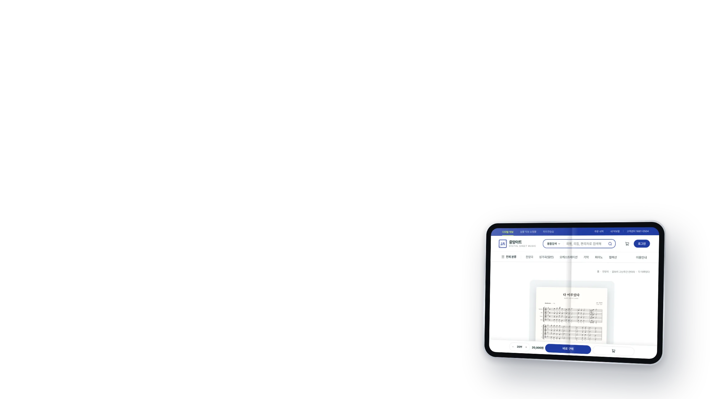
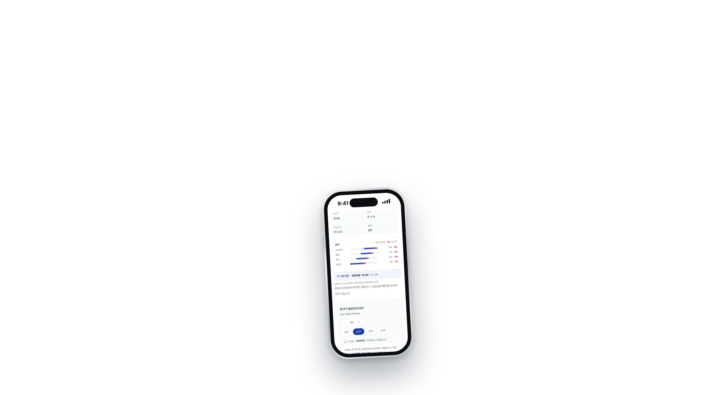
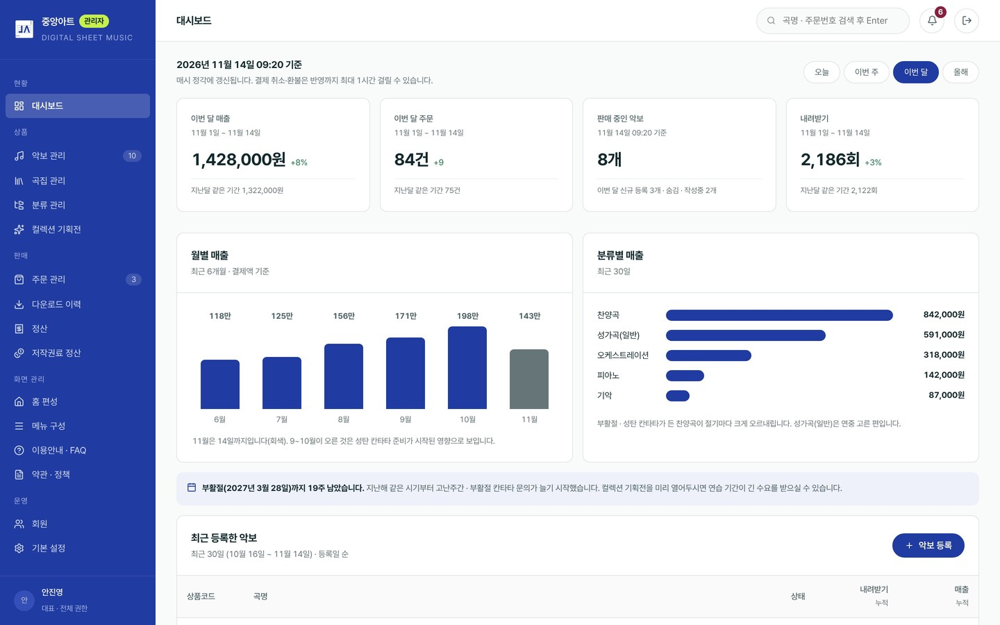
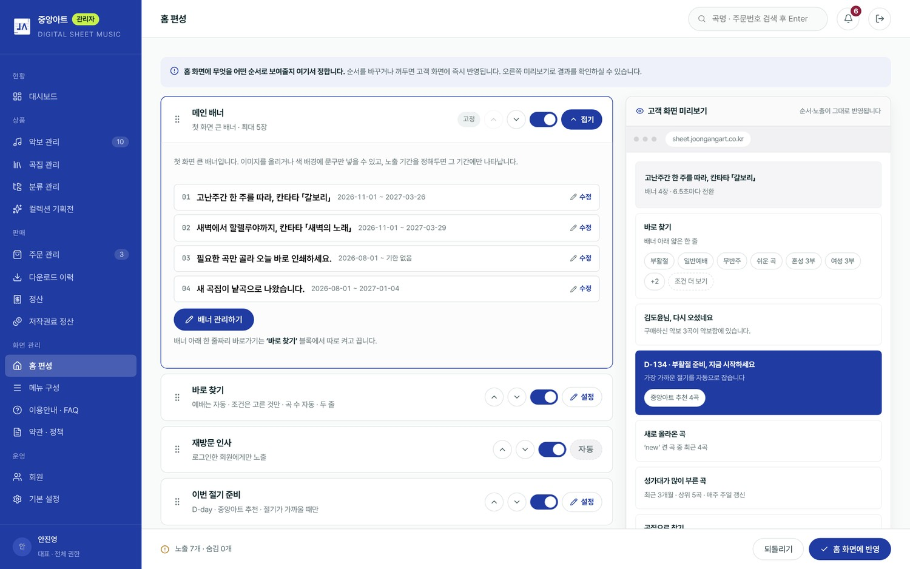
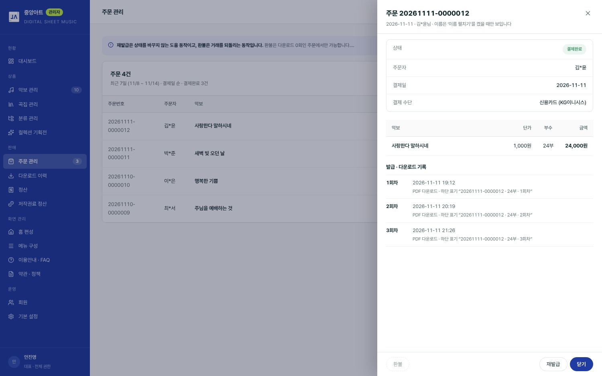

J&A MUSIC · 디지털 악보몰
중앙아트 디지털 악보몰
필요한 악보를, 지금 바로, 손 안에.
The music you need. Right now. In your hands.
지금 쇼핑몰은 그대로 둡니다.
그 옆에 낱곡 악보를 PDF로 파는 사이트를 하나 더 엽니다.
성가대는 필요한 곡만, 단원 수만큼 구매합니다.
결제가 끝나면 바로 다운로드해 인쇄합니다.
고객 화면 23개관리자 메뉴 15개11/14 회의 결정 12건 반영점검한 버튼 278개
왜 만드는가
이런 순간에서 출발했습니다
성가대와 중앙아트에서 직접 들은 불편입니다.
카드를 누르면 그 불편을 푸는 기능으로 갑니다.
1로그인
새로 가입하지 않습니다.
쓰던 아이디 그대로.
지금 쇼핑몰(카페24) 아이디로 로그인합니다.
동의는 처음 한 번만 받습니다.
둘러보기 · 미리보기 · 듣기는 로그인 없이 됩니다.
개인정보 보관 없음회원 정보는 카페24에 둡니다. 따로 관리할 직원이 필요 없습니다.
교회명 받지 않음회의 결정대로 받는 정보를 하나 줄였습니다.
로그인 상태 유지한 번 로그인하면 다음에 와도 그대로입니다.
화면 명세 B-01 로그인 · B-02 최초 동의
2홈 · 첫 화면
첫 화면에서 한 번에,
원하는 곡 목록으로.
맨 위에 통합 검색, 그 아래 지금 소개할 곡집 배너.
배너 아래 바로 찾기에 예배 · 편성 · 난이도 조건이 버튼으로 놓여 있습니다.
메뉴를 뒤지지 않고 한 번에 원하는 곡 목록으로 갑니다.
홈

바로 찾기“부활절 · 무반주 · 쉬운 곡” 같은 조건을 한 번에 누릅니다. 관리자가 8개까지 골라 둡니다.
배너에서 바로 듣기배너 곡집의 수록 곡을 그 자리에서 들어 봅니다.
쇼핑몰 · 파트연습실 연결맨 위 줄에서 실물 악보 쇼핑몰과 파트연습실로 오갑니다.
화면 명세 A-01 홈
2홈 · 절기 준비
다음 절기까지 몇 주.
홈이 먼저 알려 줍니다.
성가대는 절기에 맞춰 곡을 준비합니다.
그래서 홈 첫 줄에 다음 절기와 남은 기간을 놓았습니다.
그 절기에 부를 곡이 바로 아래 이어집니다.
남은 기간“19주 남았습니다”처럼 보여 줍니다. 연습을 언제 시작할지 정하기 쉽습니다.
추천 곡 바로 듣기중앙아트가 고른 곡을 홈에서 바로 들어 봅니다.
전례색대림절은 보라, 성탄과 고난주간은 붉은색, 부활절은 하늘색입니다.
화면 명세 A-01 홈
3검색
기존 쇼핑몰에 없던 검색,
곡 고르기를 돕는 정보까지.
곡명 · 곡집 · 편곡자로 찾는 통합 검색을 새로 넣었습니다.
검색창을 누르면 추천 검색어, 지금 많이 찾는 악보, 인기 검색어가 함께 보입니다.
곡명을 몰라도, 다른 성가대가 찾는 곡을 보며 고를 수 있습니다.
추천 검색어“성탄 칸타타 · 대림절 · 무반주 · SAB”처럼 자주 찾는 말을 버튼으로.
최근 검색어지난번에 찾던 말을 다시 누릅니다.
인기 검색어지금 다른 성가대가 무엇을 찾는지 순위로 보여 줍니다.
화면 명세 A-00 검색 패널
4목록
여러 조건으로,
우리 성가대에 꼭 맞는 악보를 찾습니다.
절기 · 편성 · 반주 · 난이도를 겹쳐 골라 목록을 좁힙니다.
“부활절 · 혼성 4부 · 반주 · 쉬움”처럼 우리 성가대에 맞는 곡만 남습니다.
목록에서 바로 악보 1면 · 듣기로 비교할 수 있습니다.
조건 검색여러 조건을 겹쳐 골라 곡을 좁힙니다.
정렬신상품 · 낮은 가격 · 쉬운 순 · 인기 순.
메뉴 나눔회의에서 정한 대로 찬양곡과 성가곡(일반)을 나눴습니다.
화면 명세 A-02 목록 · 조건
5곡 화면 · 음역 · 성경 본문새 기능
우리 성가대가 부를 수 있는지,
구매 전에 압니다.
소프라노 · 알토 · 테너 · 베이스.
파트마다 가장 낮은 음부터 가장 높은 음까지 막대로 보여 줍니다.
아마추어 성가대에 높은 음은 붉게 표시합니다.
4파트 음역지금은 곡집을 사서 펼쳐 봐야 알았습니다. 이제 곡 화면에서 바로 봅니다.
성경 본문가사가 나온 말씀을 장절로 적습니다. 설교 본문에 맞는 곡을 고르기 쉽습니다.
PDF에서 자동으로관리자가 악보를 올리면 음역을 읽어 채웁니다. 담당자는 확인만 합니다.
음역과 성경 본문으로 찾기는 값이 충분히 쌓인 뒤 2차에 엽니다.
화면 명세 A-03 악보 상세
5곡 화면 · 부수 · 최소 구매 부수새 기능
단원이 20명이면 20부.
금액은 저절로 나옵니다.
디지털 악보는 “몇 부까지 인쇄할 수 있는지”를 구매합니다.
부수를 고르면 한 부 가격 × 부수로 금액이 바로 바뀝니다.
구매한 부수는 PDF에 그대로 찍힙니다.
곡 화면 · 구매

최소 부수곡마다 “10부부터”처럼 정합니다. 1부만 사서 복사하는 일을 막습니다.
한 번에 고르기10 · 20 · 30 · 40부는 버튼 하나로 고릅니다.
관심 악보담아 둔 곡들의 연주 시간 합계와 부수별 금액을 함께 봅니다.
화면 명세 A-03 악보 상세
6주문 · 결제
곡 · 부수 · 금액을 한 번 더 확인하고,
바로 결제합니다.
주문서 한 장에 고른 곡, 인쇄 부수, 금액이 정리됩니다.
배송지를 적을 일이 없고, 이름 · 이메일은 쇼핑몰 계정에서 가져옵니다.
결제가 끝나면 바로 내 악보함으로 갑니다.
결제 수단 6가지카드 · 계좌이체 · 가상계좌 · 카카오페이 · 네이버페이. 해외는 PayPal.
이용 범위 동의“산 부수 안에서만 인쇄”에 결제 전에 동의를 받습니다.
안내 메일 · 알림톡발급 안내는 메일로 늘 보내고, 번호를 준 분께는 알림톡도 보냅니다.
화면 명세 B-04 주문서
7내 악보함 · 묶어 받기새 기능
여러 개의 악보를
하나의 PDF 파일로.
구매한 곡은 내 악보함에 모입니다.
이번 주일에 부를 곡을 골라 “한 파일로 받기”를 누릅니다.
고른 순서대로 이어 붙인 PDF 하나가 나옵니다.
언제든 다시 받기파일을 잃어버려도 악보함에서 다시 받습니다.
수록 곡 목록묶은 파일 맨 앞에 곡 목록 한 장이 붙습니다.
곡마다 워터마크묶어 받아도 곡마다 그 곡의 구매 부수가 찍힙니다.
화면 명세 C-03 내 악보함 · 다운로드
8인쇄 · 저작권 보호
모든 면에 찍히는 워터마크로
저작권을 지킵니다.
다운로드하는 PDF의 모든 면 아래에 주문번호 · 구매자 · 부수가 워터마크로 찍힙니다.
어느 주문에서 나온 악보인지 늘 드러나, 함부로 복사해 돌리기 어렵습니다.
정직하게 구매한 성가대는 인쇄에 아무 불편이 없습니다.
내 악보함 › 다운로드 창. 면마다 아래쪽에 구매 정보가 찍히고, 창 아래 자물쇠 칸에 여는 암호가 보입니다
하나모든 면에 워터마크면마다 주문번호 · 구매자 · 부수를 찍습니다. 주문마다 그 정보를 새겨 만들기 때문에, 복사본이 돌아도 어느 주문에서 나왔는지 바로 압니다.
둘구매 기록이 곧 근거성가대마다 몇 부까지 인쇄할 수 있는지 구매 기록으로 남습니다. 권리자에게도 그대로 보여 줄 수 있습니다.
셋여는 암호파일을 열 때 주문번호 뒤 6자리를 넣습니다. 암호는 다운로드 창, 주문 내역, 발급 안내 메일에 함께 적힙니다. 인쇄는 막지 않습니다.
넷다운로드 감시구매한 부수에 비해 너무 자주 받거나, 여러 지역에서 받으면 관리자 화면에 ‘주의’로 뜹니다.
화면 명세 C-03 다운로드 창 · D-16 PDF 보호 설정
어디서나
휴대폰, 태블릿, 컴퓨터.
어디서나 똑같이.
휴대폰에서 찾고, 태블릿으로 펼쳐 보고, 교회 컴퓨터에서 인쇄합니다.
접는 폰까지, 화면 크기에 맞춰 알아서 바뀝니다.
어느 기기에서 열어도 같은 악보몰입니다.


기기 그림 위에 실제 시안 화면을 각 기기 크기로 열어 얹었습니다.
1관리자 로그인
관리자 계정은 따로.
들어온 기록은 모두 남습니다.
고객용 쇼핑몰 계정과 별도의 관리자 계정을 씁니다.
언제 어디서 로그인했는지 기록됩니다.
환불과 정산은 전체 권한을 가진 담당자만 봅니다.
낯선 곳 알림처음 보는 곳에서 접속하면 등록된 메일로 알립니다.
5회 실패 잠금비밀번호를 5번 틀리면 30분 동안 잠깁니다.
권한 나눔대표 · 전체 권한과 일반 담당자 권한을 나눕니다.
화면 명세 D-00 관리자 로그인
2대시보드
들어오면 먼저,
매출과 판매 흐름을 봅니다.
이번 달 매출 · 주문 · 다운로드를 지난달 같은 기간과 비교해 보여 줍니다.
월별 · 분류별 매출로 어느 절기에 무엇이 팔리는지 보입니다.
곡 단위 판매 기록은 다음 곡집 기획의 근거가 됩니다.
admin · 대시보드

기간 버튼오늘 · 이번 주 · 이번 달 · 올해를 버튼 하나로 바꿔 봅니다.
절기 알림“부활절까지 19주 남았습니다”처럼, 기획전을 미리 열 때를 알려 줍니다.
최근 등록한 악보곡마다 다운로드 · 매출 누적을 바로 봅니다.
화면 명세 D-07 대시보드
3악보 등록
PDF, 곡명, 판매가.
세 칸이면 판매 시작.
필수 칸을 4개에서 3개로 줄였습니다.
PDF를 고르면 파일을 바로 검사합니다.
문제가 있으면 ‘판매 시작’ 버튼이 잠깁니다.
admin · 악보 관리

파일 검사형식 · 용량 · 암호 · 면수 · 용지 크기를 확인합니다.
곡명 채우기파일 이름에서 곡명을 미리 채웁니다.
표지 자동PDF 1면을 미리보기 그림으로 씁니다.
옆에서 미리보기고치는 대로 고객 화면이 옆에서 바뀝니다.
화면 명세 D-01 악보 등록
4음역 확인새 기능
음역은 적지 않습니다.
PDF에서 읽어 옵니다.
올린 악보에서 파트별 최저음 · 최고음을 읽어 채웁니다.
담당자는 맞는지 보고 확인만 누릅니다.
확인한 값만 고객에게 보입니다.
너무 높거나 낮으면아마추어 성가대에 어려운 음을 미리 표시합니다.
사보 원본이 있으면MusicXML 파일이 있으면 더 정확하고 빠릅니다.
시안 안내시안에는 예시 값이 들어갑니다. 실제 읽기는 개발 때 붙입니다.
화면 명세 D-01 악보 등록
5화면 관리
홈도, 배너도, 메뉴도.
개발자 없이 바꿉니다.
절기가 바뀌면 홈을 직접 바꿉니다.
어떤 줄을 어떤 순서로 놓을지 고르고, 켜고 끕니다.
오른쪽에 고객이 볼 화면이 함께 바뀝니다.
admin · 홈 편성

줄을 누르면 열림모든 목록이 같습니다. 한 번 익히면 어느 메뉴든 씁니다.
전례색 8가지컬렉션 배경을 절기 색에서 고릅니다.
지우기 잠금팔린 악보는 지워지지 않습니다. 구매자 악보함과 정산 장부를 지킵니다.
화면 명세 D-13 홈 편성
6주문 관리
고객 문의가 오면,
주문 상세에서 바로 확인합니다.
주문 줄을 누르면 오른쪽에 주문 상세가 열립니다.
언제 몇 번 발급했고, 언제 다운로드했는지 기록이 보입니다.
재발급과 환불도 여기서 합니다.
admin · 주문 관리

발급 · 다운로드 기록회차마다 시각과 부수가 남습니다.
재발급메일을 못 받았으면 새 발급 주소와 안내 메일을 다시 보냅니다.
환불다운로드 전 주문은 여기서 바로 환불합니다.
화면 명세 D-02 주문 관리
7다운로드 이력
이상한 다운로드는
먼저 알아차립니다.
모든 발급이 한 줄씩 쌓입니다 — 언제, 누가, 어느 곡을, 몇 부로.
구매한 부수보다 너무 자주 받으면 ‘주의’가 붙습니다.
밖으로 내보낼 때는 이름을 김*윤처럼 가립니다.
admin · 다운로드 이력

주의만 모아 보기탭 하나로 ‘주의’ 줄만 봅니다.
화면 명세 D-12 다운로드 이력
8저작권료 정산새 기능
매달 하던 저작권료 계산.
이제 버튼 하나.
팔릴 때마다 어느 곡이, 몇 부, 얼마에 팔렸는지 남습니다.
이 기록이 그대로 장부가 됩니다.
권리자별 이번 달 지급액이 계산됩니다.
admin · 저작권료 정산

역할별 요율작곡 · 작사 · 편곡 · 원곡 요율을 따로 둡니다.
시안 값: 8% · 2% · 5% · 3% · 변호사 확인 뒤 확정
엑셀 · 지급명세서버튼 하나로 만듭니다. 밖으로 나가는 파일은 이름을 가립니다.
권리자 한 번에 등록곡별 권리자 · 지분을 엑셀 한 장으로 주시면 한 번에 올립니다.
전화 · 카톡으로 받은 종이 주문을 함께 합산하는 기능은 2차 계획입니다.
화면 명세 D-17 저작권료 정산
로고
기존 CI를 그대로 이어받았습니다
JA 글자와 두 실선은 그대로 두었습니다.
바탕만 흰색으로 바꾸고 오선을 더했습니다.
실물 곡집과 한 집안이고, 악보를 파는 곳이라는 것이 함께 보입니다.
중앙아트 CI실물 곡집 쇼핑몰
파란 바탕 · 흰 JA
→
디지털 악보몰새 사이트
흰 바탕 · 오선 · 파란 JA
고객 사이트 머리
관리자 화면 · 같은 로고에 「관리자」 표시만 더합니다
CI 원본 벡터 파일을 주시면 선 굵기와 비율을 실제 CI에 더 정확히 맞추겠습니다.
필요한 악보를, 지금 바로, 손 안에.
The music you need. Right now. In your hands.
오늘 보신 화면은 모두 열어 볼 수 있습니다.
동작과 정책은 기획 문서에, 결정과 일정은 회의 자료에 있습니다.